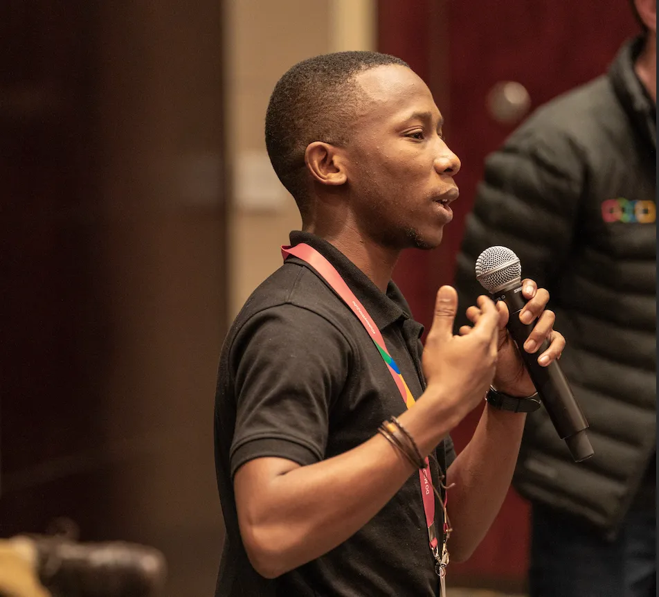

Luthando Valtyn | WDD 130
My name is Luthando Valtyn and I am a Technical Support Engineer at Zoho with a passion for technology and helping others understand complex systems. I studied at Matthew Goniwe Memorial High School and completed a Software Development Internship at Younglings. Based in Cape Town, South Africa, I enjoy hiking and ice skating during my free time.